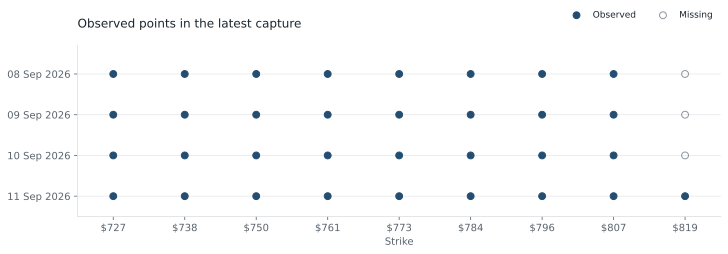

01 / Overview
What the option data show
An option gives its holder the right to buy or sell an asset at an agreed price, called the strike, by its expiry date. SPY is an exchange-traded fund that tracks the S&P 500 US share index. A fund traded on an exchange can be bought and sold much like a share.
Implied volatility is the amount of future price variation consistent with an option’s price under a pricing model. It reflects the price of uncertainty in the options market; it does not tell us which direction SPY will move.
The sample was captured on 4 September 2026. SPY’s latest recorded price was $770.01. This is a saved historical capture, not a live quote.
Result. Implied volatility is lowest near SPY’s recorded price and higher at more distant strikes. The chart makes that shape and the gaps in the collected data visible; it does not establish a trading opportunity.
02 / Data and terms
Reading an option observation
The application connects to Interactive Brokers’ trading software and requests SPY option information. The saved file contains 15 captures over about 28 seconds. Each row records a time, SPY price, expiry, strike, option type and model-implied volatility.
- Underlying / spot
- The underlying is the asset on which the option is based. Spot is its current market price; here, that asset is SPY.
- Strike / expiry
- The strike is the agreed buying or selling price. Expiry is the date the option ends.
- Call / put
- A call gives the right to buy the underlying; a put gives the right to sell it at the strike.
- Volatility surface
- A view of implied volatility across different strikes and expiry dates.
- Smile / skew
- A smile is higher implied volatility away from central strikes. Skew describes an uneven shape across strikes, often with one side higher.
- Annualised volatility
- A volatility measure expressed on a one-year scale so options of different lengths can be compared. A value of 20% does not predict a 20% price increase.
- SMART
- Interactive Brokers’ routing destination that can send eligible orders to supported exchanges. The chain labelled SMART is used to identify eligible option contracts; it is not one separate exchange.
- Model value
- An estimate produced by a pricing model. The saved values come from Interactive Brokers and are not independently recalculated from bid and ask prices.
03 / Method
From the broker feed to a saved chart
- Identify the contracts. Confirm SPY’s contract details, obtain its option list and select four nearby expiries and a limited range of strikes around the recorded SPY price.
- Collect the values. Request model-implied volatility and match each returned message to its option contract. Responses can arrive at different times.
- Save the observations. Write the time and contract details with every value. This allows the chart to be recreated without an active broker connection.
- Draw the surface. Use the latest capture and fill missing display points from neighbouring values. These estimated display points are shown separately from observed points in the coverage chart.
The data include both puts and calls. The saved values are a mixed option sample, rather than a complete quote for every strike and expiry.
04 / Results
Volatility varies across strikes
For the first expiry, 8 September, implied volatility is about 6.1% at strike $773, close to SPY’s $770.01 price. It is 20.7% at the lower strike of $727. The shortest-dated line therefore has a pronounced rise towards lower strikes.

This means options at these strikes imply different amounts of price variation under the broker’s pricing model. A single volatility number for all strikes would miss that difference.
Higher implied volatility is not automatically evidence that an option is overpriced. Strike distance, downside protection demand, model inputs and quote quality all affect the comparison. This project displays the observations rather than deciding which options to buy or sell.
05 / Data coverage
Observed points and display estimates

The three gaps are at the highest strike in the first three expiries. The renderer extends the nearest available value along those edges. That makes the surface easier to view, but the extended values are estimates and should not be read as market observations.
Values in a capture also arrive at slightly different times. The saved file helps identify the collection period, but a timestamp does not guarantee every option value was current at exactly the same instant.
06 / Limits
What needs checking before pricing
The sample is small and short dated. It uses Interactive Brokers’ model volatility rather than solving for volatility separately from market buying and selling quotes. The spread between those quotes could materially change the conclusion.
The current chart groups options by strike. A more complete comparison would adjust strike distance for interest rates, expected dividends and the forward price: the price agreed today for delivery at a later date.
Before using a fitted surface for pricing, I would remove stale or inconsistent quotes and check that option prices obey basic relationships across strikes and expiries. A stale quote has not been updated recently; a crossed quote has a buying price above the selling price.
Possible improvements
Bid and ask implied volatilities would show the range of values consistent with the two sides of a quote. Arbitrage checks would flag price relationships that could imply a riskless profit under the model’s assumptions.
SVI, short for Stochastic Volatility Inspired, is a commonly used parametric curve for implied variance. A fitted curve could smooth noisy observations, but its inputs and no-arbitrage conditions would still need checking. Implied variance is implied volatility squared.
07 / Code and sources
Run or inspect the project
The saved sample and offline renderer can be inspected without a broker account. Live collection requires Interactive Brokers Trader Workstation or IB Gateway, API connections enabled, and the relevant market-data subscriptions. An API is the interface used by the Python program to request data from the broker’s software.
Data: a saved SPY option sample collected through Interactive Brokers on 4 September 2026. No broker credentials are stored in the project.